2D examples
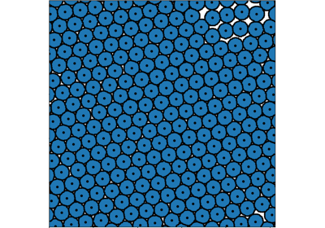
Active Brownian Particles
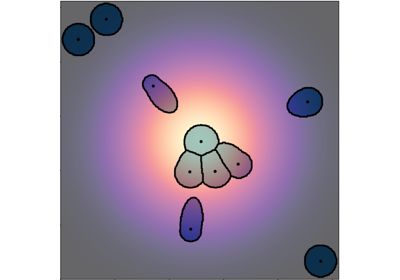
Chemotaxis induced by deformations
Chemotaxis induced by deformations
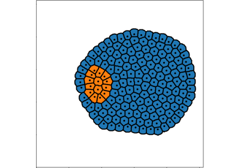
Engulfment due to surface tension effects
Engulfment due to surface tension effects
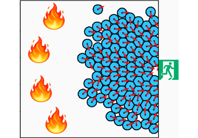
Crowd evacuation
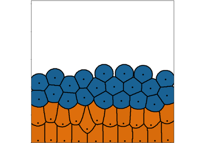
Falling soft spheres in 2D
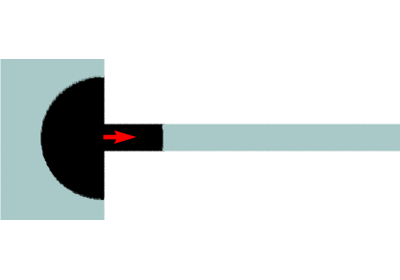
Micropipette experiment
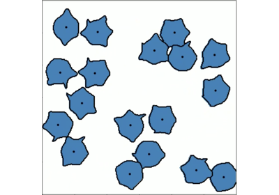
Random protrusions
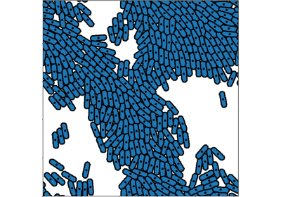
Emergence of alignment in a system of active rod-shaped particles
Emergence of alignment in a system of active rod-shaped particles
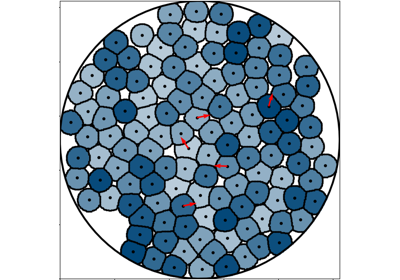
Run-and-tumble in 2D with soft spheres in a disk domain
Run-and-tumble in 2D with soft spheres in a disk domain
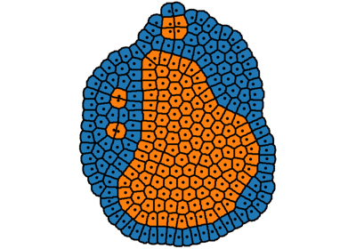
Sorting due to surface tension effects
Sorting due to surface tension effects
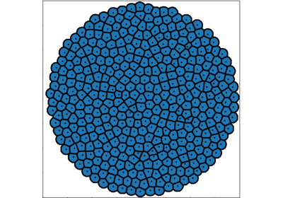
Growth of a 2D cell aggregate